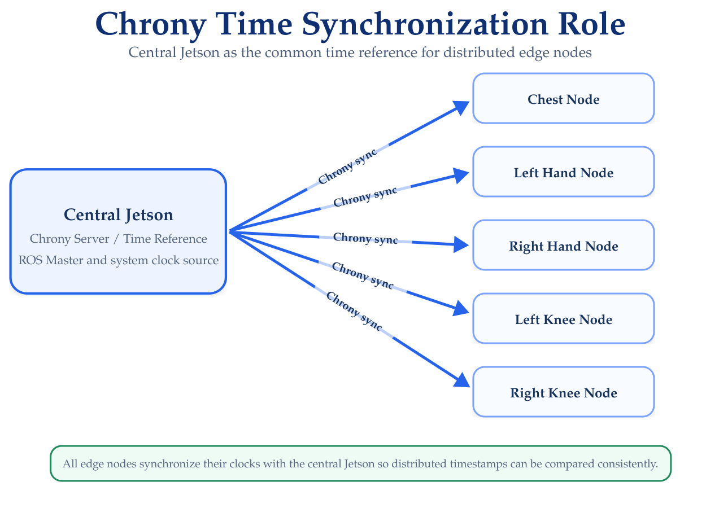

Network & Time Synchronization
Distributed Connectivity and Clock Configuration
The HAR Distributed Framework operates across multiple independent computing devices. Before deploying the HAR software, all Jetson nodes must be able to communicate through the local network and share a common time reference.
This section covers the basic network and clock configuration required by the distributed system.
Network Roles
The distributed deployment uses one central node and multiple edge nodes connected to the same local network.
The central node provides two important services:
- The ROS master used by the distributed ROS environment
- The reference clock used to synchronize the edge devices.
The edge nodes connect to the central node through the local network.
The specific IP addresses depend on the deployment.
Throughout this documentation, placeholders such as <CENTRAL_IP> and <EDGE_IP> are used when an address is installation-specific.
Verify Network Connectivity
Before configuring ROS or Chrony, verify that every device is connected to the same local network.
Check the IP addresses of a Jetson using:
hostname -Ior:
ip addrFrom each edge node, verify connectivity to the central device:
ping <CENTRAL_IP>Similarly, the central node should be able to reach each edge device:
ping <EDGE_IP>The distributed configuration should not continue until bidirectional network connectivity is available.
ROS Multi-Machine Configuration
ROS Noetic uses a master process to coordinate communication between nodes.
In the implemented framework, the distributed devices use the central Jetson as the ROS master.
Central Node
On the central node, configure:
export ROS_MASTER_URI=http://<CENTRAL_IP>:11311
export ROS_IP=<CENTRAL_IP>The ROS master can then be started using:
roscoreEdge Nodes
Each edge node must point to the same ROS master:
export ROS_MASTER_URI=http://<CENTRAL_IP>:11311
export ROS_IP=<EDGE_IP>For example, each edge device uses its own address for ROS_IP while keeping the central address in ROS_MASTER_URI.
The general configuration is therefore:
| Device | ROS_MASTER_URI |
ROS_IP |
|---|---|---|
| Central Node | Central IP | Central IP |
| Chest Node | Central IP | Chest Node IP |
| Left Hand Node | Central IP | Left Hand Node IP |
| Right Hand Node | Central IP | Right Hand Node IP |
| Left Knee Node | Central IP | Left Knee Node IP |
| Right Knee Node | Central IP | Right Knee Node IP |
ROS_IP must identify the device on which the ROS process is running.
Do not assign the central node IP as ROS_IP on the edge devices.
Container Network Configuration
The HAR framework executes its ROS components inside Docker containers.
The ROS networking variables must therefore also be available inside the corresponding container.
The required environment variables are:
ROS_MASTER_URI
ROS_IPThe central and edge containers must preserve the same network relationships described above.
Detailed container startup commands are documented later under Running the Framework.
Verify ROS Communication
After starting roscore on the central device, verify the ROS environment from an edge node.
Check the master address:
echo $ROS_MASTER_URICheck the local ROS address:
echo $ROS_IPThen test access to the distributed ROS environment:
rostopic listIf the edge device can retrieve the topic list from the central ROS master, basic ROS connectivity is working.
Network connectivity using ping does not guarantee that ROS is configured correctly.
Always verify ROS communication independently after confirming IP connectivity.
Why Clock Synchronization Is Required
The distributed nodes generate predictions independently.
Because timestamps originate from different physical devices, their system clocks must be aligned before timing information can be compared reliably.
Clock synchronization is required for:
- Prediction timestamp comparison
- Distributed message alignment
- Communication latency analysis
- Synchronization measurements
- End-to-end timing evaluation
The framework uses Chrony to maintain a common time reference across the distributed devices.
Chrony Architecture
The central Jetson acts as the local time reference for the distributed system.
Each edge node synchronizes its system clock against the central Jetson using Chrony, ensuring that timestamps generated on different devices can be compared consistently during synchronization and latency analysis.
The role of Chrony in the distributed architecture is illustrated in Figure 1.

Install Chrony
Install Chrony on the required devices using:
sudo apt update
sudo apt install chronyThe main configuration file is:
/etc/chrony/chrony.confConfigure the Central Node
The central node must allow the edge devices on the local network to use it as a time source.
A deployment-specific Chrony configuration may include:
allow <LOCAL_SUBNET>
local stratum 10For example, <LOCAL_SUBNET> should correspond to the subnet used by the distributed Jetson network.
Do not copy a subnet value from another deployment.
Use the subnet assigned to the local network hosting the HAR system.
Restart Chrony after modifying the configuration:
sudo systemctl restart chronyConfigure the Edge Nodes
Each edge node should use the central Jetson as its time source.
In /etc/chrony/chrony.conf, configure the central node address as:
server <CENTRAL_IP> iburstRestart Chrony:
sudo systemctl restart chronyRepeat this configuration on every edge device.
Verify Clock Synchronization
Check the current synchronization status using:
chronyc trackingInspect the available time sources using:
chronyc sources -vThe central Jetson should appear as the synchronization source on each edge device.
A healthy Chrony configuration should indicate that the device is synchronized and that the central node is being used as the active time source.
Recommended Verification Order
Verify the distributed infrastructure in this order:
- Confirm that every device has a valid local IP address.
- Verify bidirectional connectivity using
ping. - Confirm
ROS_MASTER_URIandROS_IP. - Start the ROS master on the central node.
- Verify ROS access from each edge node.
- Verify Chrony connectivity.
- Confirm clock synchronization using
chronyc tracking. - Confirm the active time source using
chronyc sources -v.
Only after network communication and clock synchronization are working should the distributed HAR components be started.
Troubleshooting
Edge Node Cannot Reach the ROS Master
Verify:
ping <CENTRAL_IP>and:
echo $ROS_MASTER_URI
echo $ROS_IPConfirm that roscore is running on the central node.
ROS Works Locally but Not Across Devices
Check that:
- The devices are on the same reachable network
ROS_MASTER_URIpoints to the central nodeROS_IPcorresponds to the current device- The relevant ports are not blocked
- The Docker network configuration allows communication with the host network
Chrony Does Not Synchronize
Check:
chronyc sources -vand:
chronyc trackingVerify that:
- The central node is reachable;
- The edge node uses the correct central IP;
- The central Chrony configuration allows clients from the local subnet; and
- The Chrony service is running.
Check the service using:
sudo systemctl status chronyNext Step
Once network communication and clock synchronization are working correctly, continue with:
This prepares the MetaMotionRL devices and verifies communication between each wearable sensor and its corresponding edge computing node.